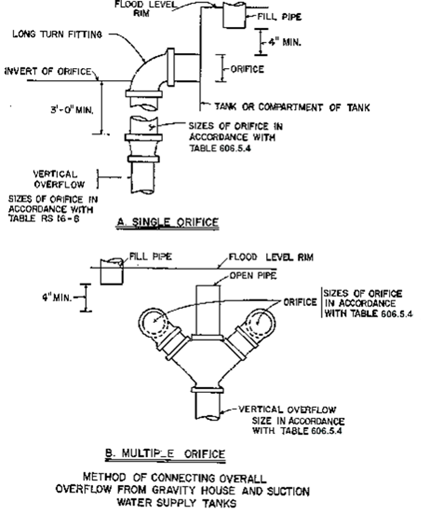
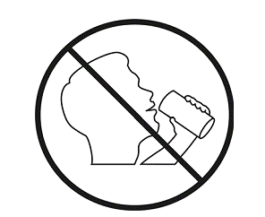

Fixture Supply Outlet Serving | Flow Rate a (gpm) | Flow Pressure b (psi) |
Fixture Supply Outlet Serving | Flow Rate a (gpm) | Flow Pressure b (psi) |
Bathtub, no shower | 4 | 20 |
Bathtub with anti-scald protection | 4 | 20 |
Bidet | 1.5 | 20 |
Combination fixture | 4 | 8 |
Dishwasher, residential | 2.75 | 8 |
Drinking fountain | 0.75 | 8 |
Laundry tray | 4 | 8 |
Lavatory, private | 1.5 | 8 |
Lavatory, private, mixing valve | 1.5 | 8 |
Lavatory, public | 1.5 | 8 |
Shower | 2 | 8 |
Shower, balanced-pressure, thermostatic or combination balanced-pressure/thermostatic mixing valve | 2
b | 20 |
Sillcock, hose bibb | 5 | 8 |
Sink, residential | 2.2 | 8 |
Sink, service | 3 | 8 |
Urinal, valve | 18 | 20 |
Water closet, blow out, flushometer valve | 25 | 25 |
Water closet, flushometer tank | 3 | 20 |
Water closet, siphonic, flushometer valve | 25 | 25 |
Water closet, tank, close coupled | 3 | 15 |
Water closet, tank, one piece | 3 | 20 |
Plumbing Fixture or Fixture Fitting | Maximum Flow Rate or Quantity b |
Plumbing Fixture or Fixture Fitting | Maximum Flow Rate or Quantity b |
Lavatory, private | 1.5 gpm at 60 psi |
Lavatory, public (metering) | 0.25 gallon per metering cycle |
Lavatory, public (other than metering) | 0.5 gpm at 60 psi |
Shower head
a | 2.0 gpm at 80 psi
d |
Sink faucet | 2.2 gpm at 60 psi |
Urinal | 0.5 gallon per flushing cycle |
Water closet | 1.28 gallons per flushing cycle or equivalent dual flush
c |
Fixture | Minimum Pipe Size (inch) |
Fixture | Minimum Pipe Size (inch) |
Bathtubs | 1/2 |
Bidet | 3/8 |
Combination sink and tray | 1/2 |
Dishwasher, domestic | 1/2 |
Drinking fountain | 3/8 |
Hose bibbs | 1/2 |
Kitchen sink | 1/2 |
Laundry, 1, 2 or 3 compartments | 1/2 |
Lavatory | 3/8 |
Shower, single head | 1/2 |
Sinks, flushing rim | 3/4 |
Sinks, service | 1/2 |
Urinal, flush tank | 1/2 |
Urinal, flushometer valve | 3/4 |
Wall hydrant | 1/2 |
Water closet, flush tank | 3/8 |
Water closet, flushometer tank | 3/8 |
Water closet, flushometer valve | 1 |
Water closet, one piece | 1/2 |
Material | Standard |
Brass pipe | ASTM B 43 |
Copper or copper-alloy pipe | ASTM B 42; ASTM B 302 |
Copper or copper-alloy tubing (Type K, L) | ASTM B 75; ASTM B 88; ASTM B 251; ASTM B 447 |
Ductile iron pipe | AWWA C151/A21.51; AWWA C115/A21.15 |
Stainless steel pipe (Type 304/304L) | ASTM A 312; ASTM A 778 |
Stainless steel pipe (Type 316/316L) | ASTM A 312; ASTM A 778 |
Material | Standard |
Brass pipe | ASTM B 43 |
Copper or copper-alloy pipe | ASTM B 42; ASTM B 302 |
Copper or copper-alloy tubing (Type K) | ASTM B 75; ASTM B 88; ASTM B 251; ASTM B 447 |
Ductile iron water pipe | AWWA C151/A21.51; AWWA C115/A21.15 |
Stainless steel pipe (Type 304/304L) | ASTM A 312; ASTM A 778 |
Stainless steel pipe (Type 316/316L) | ASTM A 312; ASTM A778 |
Material | Standard |
Brass | ASTM B 62 |
Cast-iron | ASTM B 42; ASTM B 302 |
Copper or copper alloy | ASTM B 75; ASTM B 88; ASTM B 251; ASTM B 447 |
Gray iron and ductile iron | AWWA C151/A21.51; AWWA C115/A21.15 |
Stainless steel (Type 304/304L) | ASTM A 312; ASTM A 778 |
Stainless steel (Type 316/316L) | ASTM A 312; ASTM A 778 |
Material | Standard |
Copper or copper-alloy | ASME A112.4.14; ASME A112.18.1/CSA B125.1; ASME B16.34; CSA B125.3; MSS SP-67; MSS SP-80; MSS SP-110 |
Gray iron and ductile iron | AWWA C500; AWWA C504; AWWA C507; MSS SP-67; MSS SP- 70; MSS SP-71; MSS SP-72; MSS SP-78 |
Stainless steel (Type 304/304L and 316/316L) | MSS SP-67; MSS SP-110 |
Material | Standard |
Brass-, copper-, chromium-plated | ASTM B 687 |
Stainless steel | ASTM A 403 / A 403M |
Overflow Pipe Size (inches) | Maximum Allowable GPM for Each Orifice Opening into Tank | Maximum Allowable GPM for Vertical Overflow (Piping Connecting Orifices) |
Overflow Pipe Size (inches) | Maximum Allowable GPM for Each Orifice Opening into Tank | Maximum Allowable GPM for Vertical Overflow (Piping Connecting Orifices) |
2 | 19 | 25 |
3 | 43 | 75 |
4 | 90 | 163 |
5 | 159 | 296 |
6 | 257 | 472 |
8 | 505 | 1,020 |
10 | 890 | 1,870 |
12 | 1,400 | 2,967
|

Tank Capacity (gallons) | Drain Pipe (inches) |
Up to 750 | 1 |
751 to 1,500 | 1 1/2 |
1,501 to 3,000 | 2 |
3,001 to 5,000 | 2 1/2 |
5,000 to 7,500 | 3 |
Over 7,500 | 4 |
Device | Degree of Hazard a | Application b | Applicable Standards |
Device | Degree of Hazard a | Application b | Applicable Standards |
Backflow prevention assemblies: | |||
Double check backflow prevention assembly | Low hazard | Backpressure or backsiphonage Sizes 3/8" - 12" | ASSE 1015, AWWA C510, CSA B64.5, CSA B64.5.1 |
Double check detector fire protection backflow prevention assemblies | Low hazard | Backpressure or backsiphonage Sizes 2" - 12" | ASSE 1048 |
Pressure vacuum breaker assembly | High or low hazard | Backsiphonage only Sizes 1/2" - 2" | ASSE 1020, CSA B64.1.2 |
Reduced pressure principle backflow preventer | High or low hazard | Backpressure or backsiphonage Sizes 3/8" - 12" | ASSE 1013, AWWA C511, CSA B64.4, CSA B64.4.1 |
Reduced pressure detector fire protection backflow prevention assemblies | High or low hazard | Backsiphonage or backpressure | ASSE 1047 |
Spill-resistant vacuum breaker assembly c | High or low hazard | Backsiphonage only Sizes 1/4" - 2" | ASSE 1056 |
Backflow preventer plumbing devices: | |||
Antisiphon-type fill valves for gravity water closet flush tanks | High hazard | Backsiphonage only | ASSE 1002, CSA B125.3 |
Backflow preventer for carbonated beverage machines | Low hazard | Backpressure or backsiphonage Sizes 1/4"- 3/8" | ASSE 1022 |
Backflow preventer with intermediate atmospheric vents | Low hazard | Backpressure or backsiphonage Sizes 1/4"- 3/8" | ASSE 1012, CSA B64.3 |
Dual-check-valve-type backflow preventer | Low hazard | Backpressure or backsiphonage Sizes 1/4" - 1" | ASSE 1024, CSA B64.6 |
Hose connection backflow preventer | High or low hazard | Low head backpressure, rated working pressure, backpressure or backsiphonage Sizes 1/2" - 1" | ASME A112.21.3, ASSE 1052, CSA B64.2.1.1 |
Hose connection vacuum breaker | High or low hazard | Low head backpressure or backsiphonage Sizes 1/2", 3/4", 1" | ASME A112.21.3, ASSE 1011, CSA B64.2, CSA B64.2.1 |
Laboratory faucet backflow preventer | High or low hazard | Low head backpressure and backsiphonage | ASSE 1035, CSA B64.7 |
Pipe-applied atmospheric-type vacuum breaker | High or low hazard | Backsiphonage only Sizes 1/4" - 4" | ASSE 1001, CSA B64.1.1 |
Vacuum breaker wall hydrants, frost-resistant, automatic-draining type | High or low hazard | Low head backpressure or backsiphonage Sizes 3/4", 1" | ASME A112.21.3, ASSE 1019, CSA B64.2.2 |
Other means or methods: | |||
Air gap | High or low hazard | Backsiphonage or backpressure | ASME A112.1.2 |
Air gap fittings for use with plumbing fixtures, appliances and appurtenances | High or low hazard | Backsiphonage or backpressure | ASME A112.1.3 |
Barometric loop | High or low hazard | Backsiphonage only | (See Section 608.13.4) |

Pipe Diameter (inches) | Length Background Color Field (inches) | Size of Letters (inches) |
3/4 to 1 1/4 | 8 | 0.5 |
1 1/2 to 2 | 8 | 0.75 |
2 1/2 to 6 | 12 | 1.25 |
8 to 10 | 24 | 2.5 |
over 10 | 32 | 3.5 |
Fixture | Minimum Air Gap | |
Away from a Wall a (inches) | Close to a Wall (inches) | |
Lavatories and other fixtures with effective openings not greater than 1/2 inch in diameter | 1 | 1 1/2 |
Sinks, laundry trays, gooseneck back faucets and other fixtures with effective openings not greater than 3/4 inch in diameter | 1 1/2 | 2 1/2 |
Over-rim bath fillers and other fixtures with effective openings not greater than 1 inch in diameter | 2 | 3 |
Drinking water fountains, single orifice not greater than 7/16 inch in diameter or multiple orifices with a total area of 0.150 square inch (area of circle 7/16 inch in diameter) | 1 | 1 1/2 |
Effective openings greater than 1 inch | Two times the diameter of the effective opening | Three times the diameter of the effective opening |
Source of Contamination | Distance (feet) |
Source of Contamination | Distance (feet) |
Barnyard | 100 |
Farm silo | 25 |
Pasture | 100 |
Pumphouse floor drain of cast iron draining to ground surface | 2 |
Seepage pits | 50 |
Septic tank | 25 |
Sewer | 10 |
Subsurface disposal fields | 50 |
Subsurface pits | 50 |